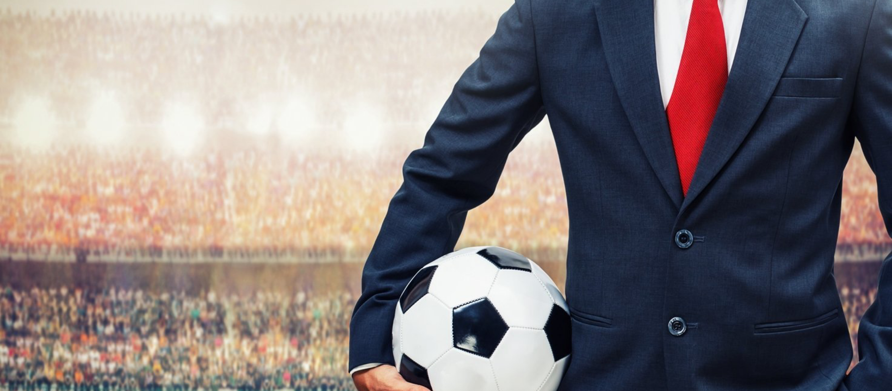

Vincularnos con el aficionado al fútbol y de esta manera ganar visibilidad.
En nuestro rol de asesores comerciales del Club Sporting Cristal desde 2018, gestionmos el ingreso de su nuevo patrocinador MG, marca de autos de origen británica que inica su inversión en el deporte local con el club celeste.
Desde el mes de Agosto del2019, el retorno de inversión respecto a la exposición de la marca MG ha sido de $ 638,311, superando en más de 500% la inversión realizada por la marca en el periodo.
El retorno en comunicación ha sido de más de $12 por cada dólar invertido en el patrocinio, lo cual pone en valor la ubicación (mangas frontales) y los beneficioes ofrecidos por el Club.